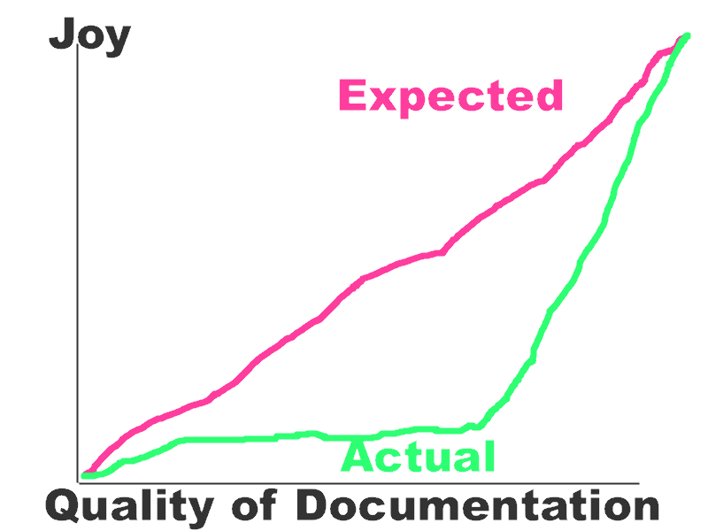

Creating Web APIs that are a Joy to Use
Issac Kelly - PyOhio 2011 - July 31st, 2011
Why Create a Web API?
Because somebody wants it
Learning tool for developers
You'll figure it out later
Documentation

What do I need to think about?
- Data Modeling
- Your Audience
- Writing Documentation
- Tests
- Authorization and Authentication
- Data Formats
- Handling Errors
- Changing your API
Implementing all this quickly in Django
MusicBrainz
- Django
- ./manage.py introspectdb > models.py
- ./manage.py test
- Tastypie
- Sphinx and Readthedocs.org